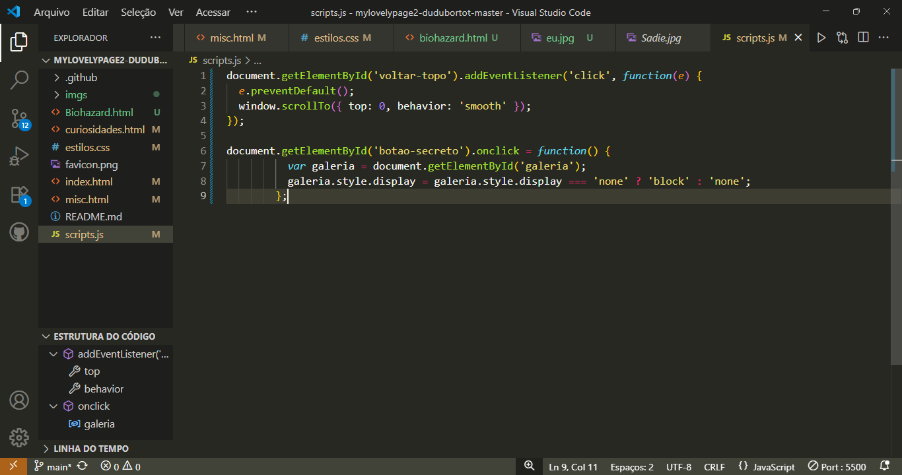
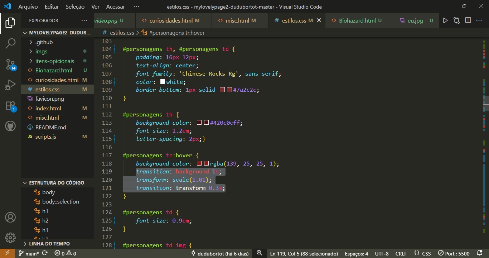
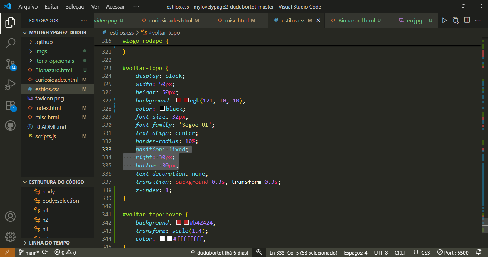
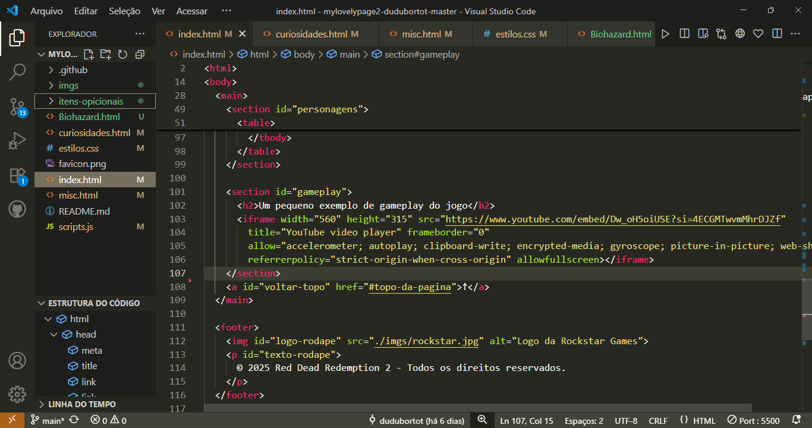

Reivindicação dos Itens Opcionais
-
(3-10%) Criar algo interativo na página:
Criei uma galeria de imagens acessadas por um botão com função programada em JavaScript.
-
(5-10%) Colocar animações, transições e transformações:
Coloquei algumas transições e animações na página.
-
(2-5%) Easter eggs usando CSS ou JavaScript
Dica: tem a ver com uma pesquisa no computador da Amanda.
-
(5%) Alguns elementos com posicionamento não estático
Usei diferentes tipos de posicionamento, como é o caso do botão de voltar ao topo da página.
-
(3%) Exibição de vídeo:
Usei iframe para incluir um vídeo do YouTube.
-
(5%) Usar o Git ao longo do trabalho
Usei a extensão do Git várias vezes para atualizar o repositório diretamente do VS Code.